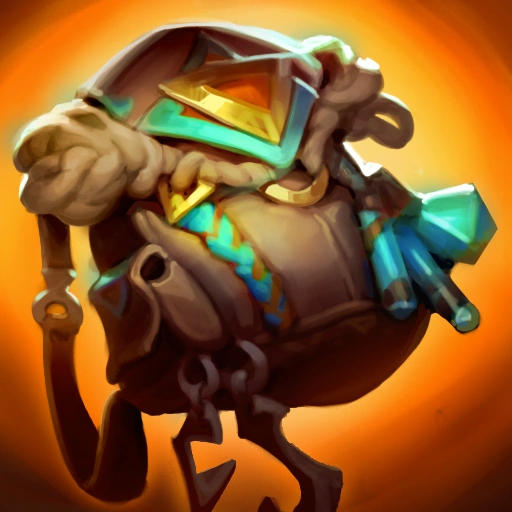
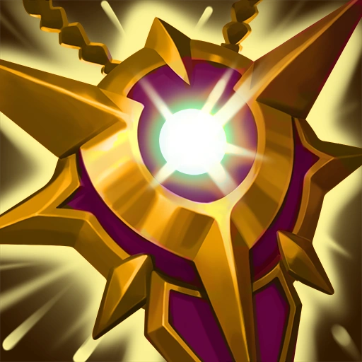
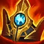
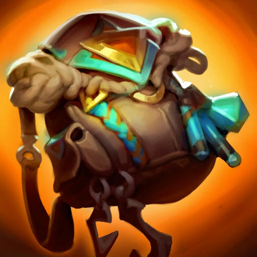
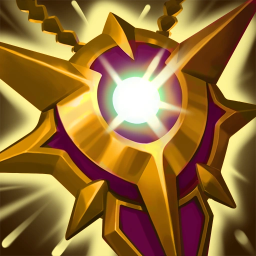
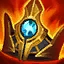
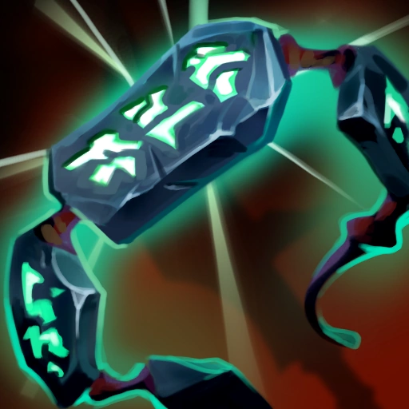
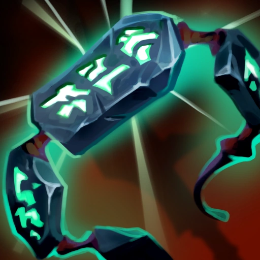

Smolder's hardest part of the game is the early game. He wants to farm minions and scale. So, the best supports for Smolder are the ones that can keep him alive for the first 14 minutes of the game. Those are:
Rakan: 1.Solstice Sleigh|2.Ionian Boots of Lucidity|3.Trailblazer|4.Locket of the Iron Solari|5.Shurelyas Battlesong|6.Knight's Vow


 






Braum: 1.Solstice Sleigh|2.Plated Steelcaps|3.Locket of the Iron Solari|4.Knight's Vow|5.Frozen Heart|6.Kaenic Rookern


 

Renata: 1.Solstice Sleigh|2.Ionian Boots of Lucidity|3.Locket of the Iron Solari|4.Shurelyas Battlesong|5.Redemption|6.Ardent Censer